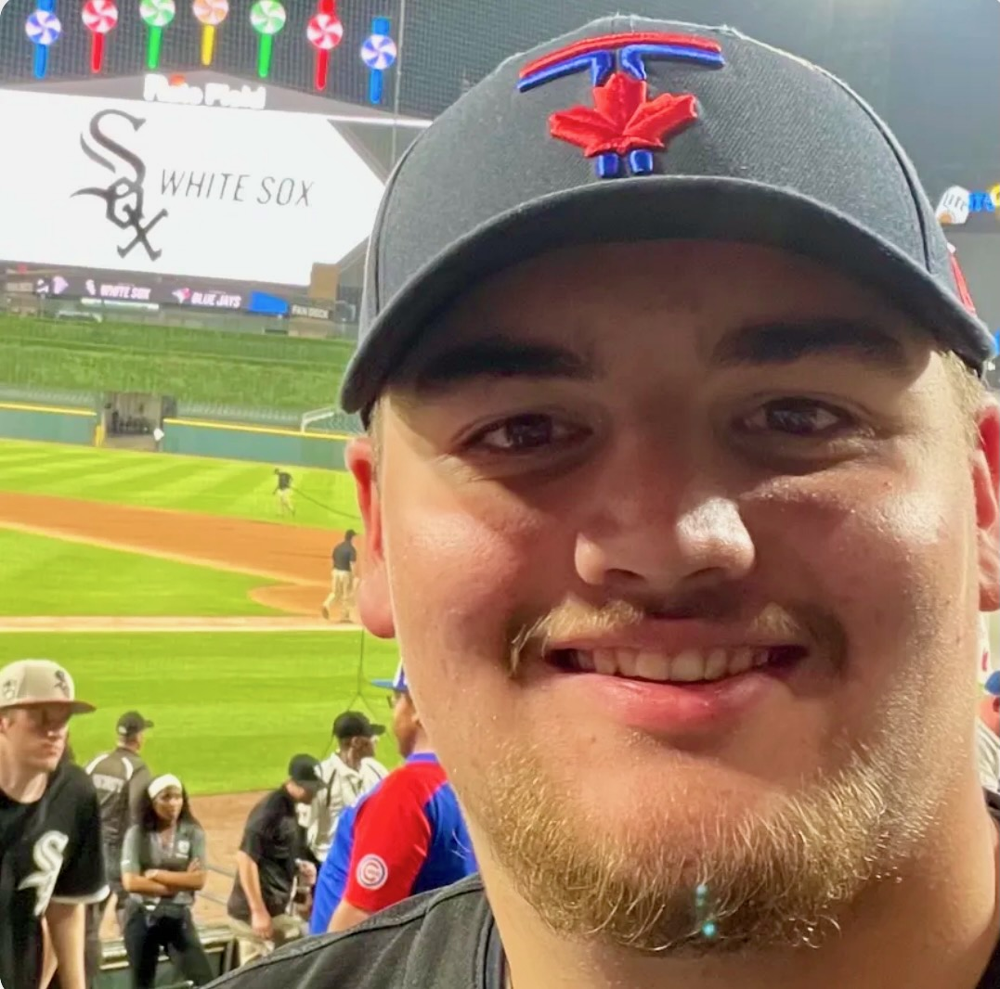

About Me
My name is Cooper Greer. I am a student at Queen’s School of Computing. I love playing video games. my favourite games right now are the Resident Evil series and the Life is Strange series. I also love watching movies and sports. My favourite movie this year is The Odyssey and my favourite sports team is the Pittsburgh Penguins. .
)
Courses
- Course One — ARIN 100 Fundamentals of AI
- Course Two — ARIN 101 AI in Society
- Course Three - CISC 121 Intro. to Computing Science
- Course Four - CISC 171 Computational Probability and Statistics
- Course Five - IDIS 199 The Science of Mental Health
Contact
Email: 24hprv@queensu.ca
LinkedIn: https://www.linkedin.com/in/cooper-greer-b0b4a33a9/?isSelfProfile=true